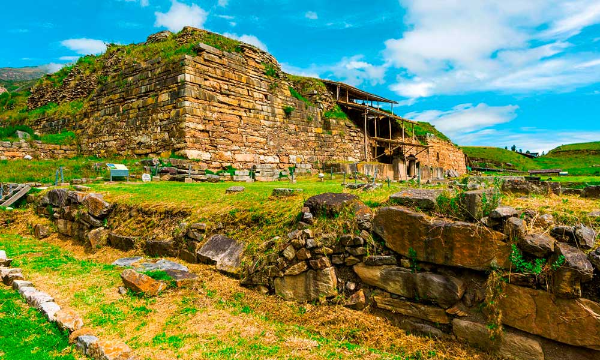
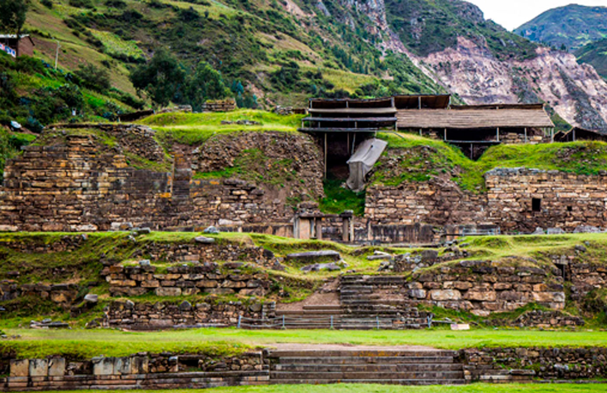
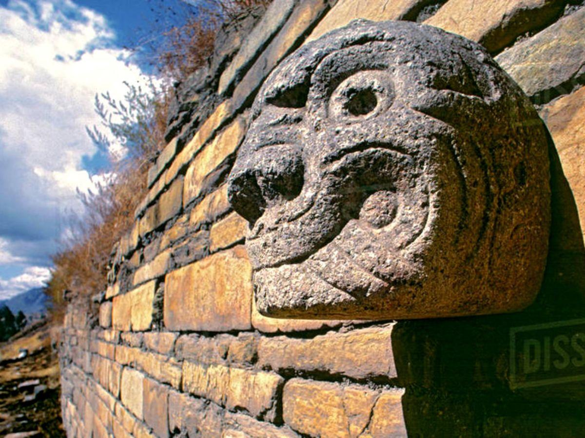
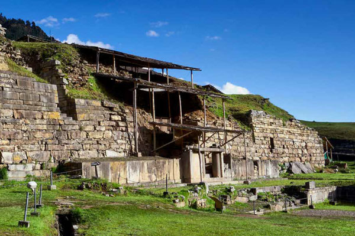

Chavín de Huántar: Centro Ceremonial y Cultural
Chavín de Huántar es un sitio arqueológico ubicado en la región de Áncash, considerado una de las culturas más antiguas del Perú. Este complejo ceremonial, construido por la cultura Chavín alrededor del 1200 a.C., es famoso por su arquitectura en piedra, galerías subterráneas y el icónico Lanzón Monolítico.
Historia
Chavín de Huántar fue un importante centro religioso y de peregrinación en la época preincaica. Se cree que los sacerdotes de Chavín utilizaban la arquitectura y el arte para influir en los visitantes, combinando sonido, luz y escultura en sus rituales. El sitio ha sido declarado Patrimonio de la Humanidad por la UNESCO.




Actividades y Recomendaciones
- Exploración arqueológica: Recorre los templos, plazas y pasadizos subterráneos de este complejo milenario.
- Fotografía: Captura la impresionante arquitectura y los detalles de las esculturas de piedra.
- Centro de Interpretación: Visita el museo de sitio para conocer más sobre la cultura Chavín.
- Aclimatación: Chavín de Huántar se encuentra a más de 3,000 metros sobre el nivel del mar, por lo que es recomendable adaptarse a la altura antes de la visita.
- Respeto por el patrimonio: Evita tocar las esculturas y estructuras para preservar este legado histórico.